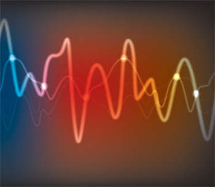

Our paper on "Fast measurement of phase and its derivatives in digital holographic interferometry using graphics processing unit assisted state space method", has been accepted for publication in ELSEVIER Optik-- International Journal for Light and Electron
1. Online Course on Signals & Systems
Introduction
This is an online course on signals and systems. The course does not require any specific pre-requisite. Students are expected to have basic understanding of calculus and complex numbers. The content is made under PMRF teaching work. The course has several modules containing video lectures and GATE exam solutions. Following is the link to the youtube channel.
Introduction to Signals & Systems
2. Institute Teaching Assitanatships
1. Optical Coherent Imaging (EE620A)
Performed teaching duties including conduction and evaluation of exam for the course.
2. Departmental Post Graduate Committee
Performed work related to PG admission at IIT Kanpur.